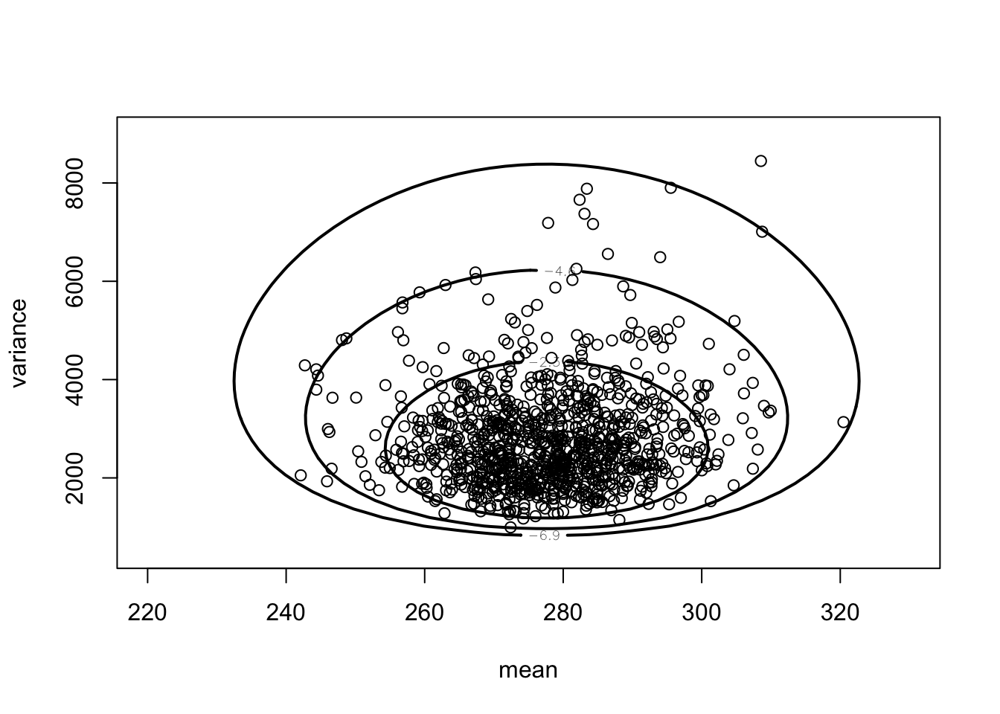
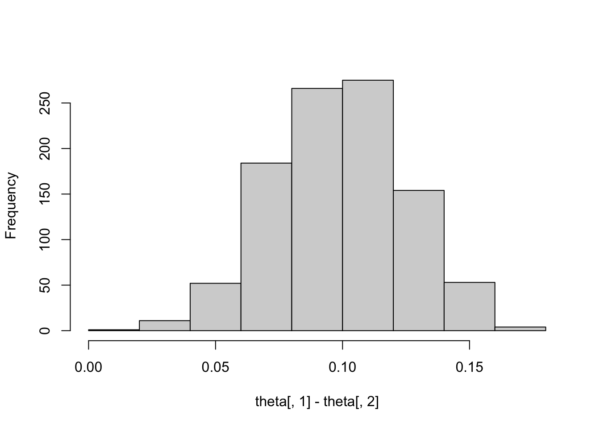
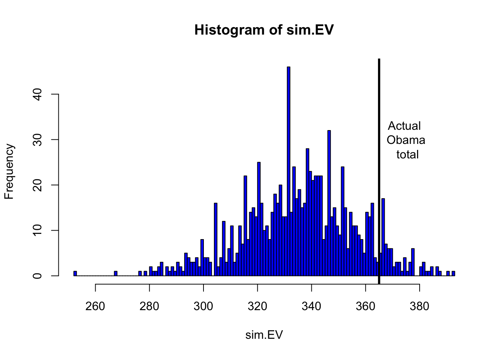
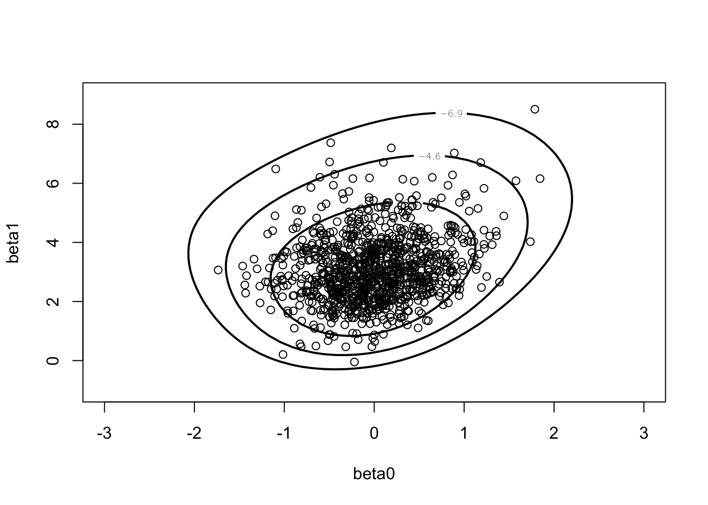
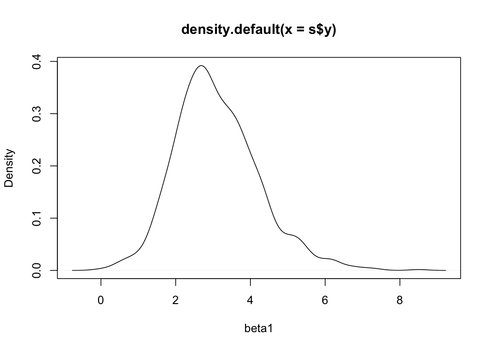
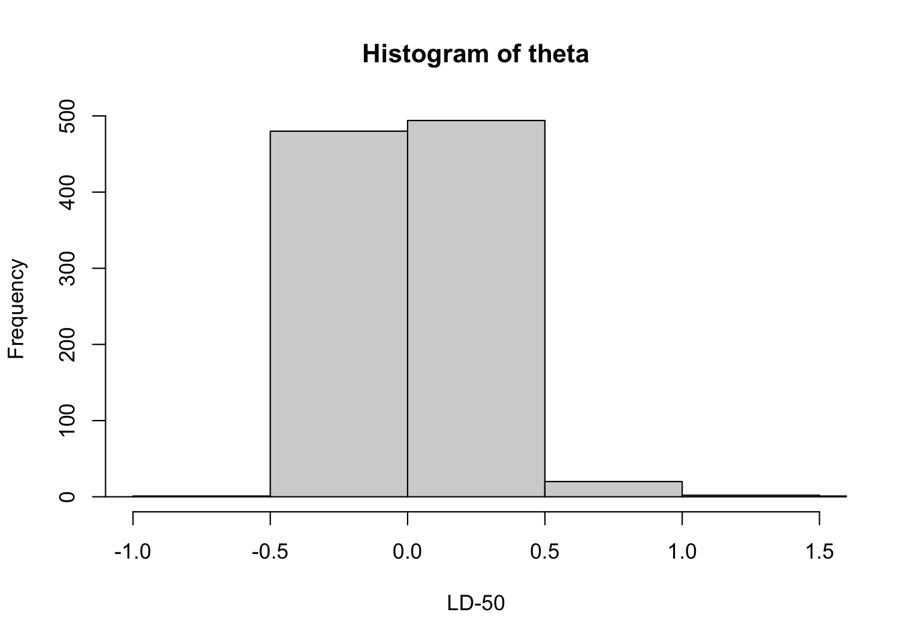
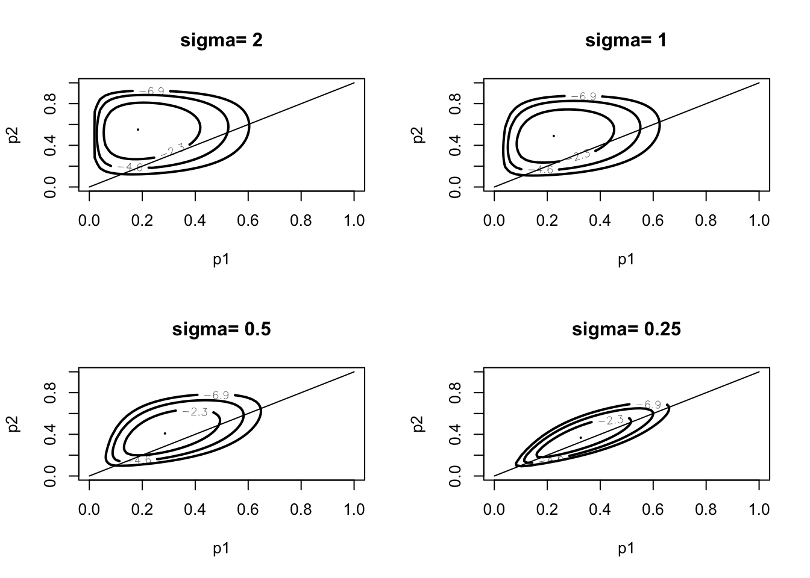

Chapter 4 Multiparameter Models
4.1 Normal Data with Both Parameters Unknown
Illustrates exact posterior sampling of (\(\mu, \sigma^2\)) for normal sampling with a noninformative prior.
library(LearnBayes)mycontour(normchi2post,
c(220, 330, 500, 9000),
marathontimes$time,
xlab="mean", ylab="variance")
S <- with(marathontimes,
sum((time - mean(time))^2))
n <- length(marathontimes$time)
sigma2 <- S / rchisq(1000, n - 1)
mu <- rnorm(1000, mean = mean(marathontimes$time),
sd = sqrt(sigma2) / sqrt(n))
mycontour(normchi2post,
c(220, 330, 500, 9000),
marathontimes$time,
xlab="mean", ylab="variance")
points(mu, sigma2)
quantile(mu, c(0.025, 0.975))## 2.5% 97.5%
## 255.8784 300.8766quantile(sqrt(sigma2), c(0.025, 0.975))## 2.5% 97.5%
## 38.16360 72.060664.2 A Multinomial Model
Multinomial data and a uniform prior placed on the proportions. Sampling from the Dirichlet posterior distribution.
alpha <- c(728, 584, 138)
theta <- rdirichlet(1000, alpha)
hist(theta[, 1] - theta[, 2], main="")
Considers posterior distribution of Obama electoral votes for the 2008 presidential election.
prob.Obama <- function(j){
p <- with(election.2008,
rdirichlet(5000,
500 * c(M.pct[j], O.pct[j],
100 - M.pct[j] - O.pct[j]) / 100 + 1))
mean(p[, 2] > p[, 1])
}
Obama.win.probs <- sapply(1 : 51, prob.Obama)sim.election <- function(){
winner <- rbinom(51, 1,
Obama.win.probs)
sum(election.2008$EV * winner)
}sim.EV <- replicate(1000, sim.election())hist(sim.EV, min(sim.EV) : max(sim.EV), col="blue")
abline(v=365, lwd=3) # Obama received 365 votes
text(375, 30, "Actual \n Obama \n total")
4.3 A Bioassay Experiment
Bayesian fitting of a logistic model using data from a dose-response experiment.
x <- c(-0.86, -0.3, -0.05, 0.73)
n <- c(5, 5, 5, 5)
y <- c(0, 1, 3, 5)
data <- cbind(x, n, y)Traditional logistic model fit.
glmdata <- cbind(y, n - y)
results <- glm(glmdata ~ x, family = binomial)
summary(results)##
## Call:
## glm(formula = glmdata ~ x, family = binomial)
##
## Deviance Residuals:
## 1 2 3 4
## -0.17236 0.08133 -0.05869 0.12237
##
## Coefficients:
## Estimate Std. Error z value Pr(>|z|)
## (Intercept) 0.8466 1.0191 0.831 0.406
## x 7.7488 4.8728 1.590 0.112
##
## (Dispersion parameter for binomial family taken to be 1)
##
## Null deviance: 15.791412 on 3 degrees of freedom
## Residual deviance: 0.054742 on 2 degrees of freedom
## AIC: 7.9648
##
## Number of Fisher Scoring iterations: 7Illustration of a conditional means prior. When x = -.7, median and 90th percentile of p are (.2,.4). When x = +.6, median and 90th percentile of p are (.8, .95)
a1.b1 <- beta.select(list(p=.5, x=.2),
list(p=.9, x=.5))
a2.b2 <- beta.select(list(p=.5, x=.8),
list(p=.9, x=.98))prior <- rbind(c(-0.7, 4.68, 1.12),
c(0.6, 2.10, 0.74))
data.new <- rbind(data, prior)Plot prior.
plot(c(-1,1), c(0, 1), type="n",
xlab="Dose", ylab="Prob(death)")
lines(-0.7 * c(1, 1), qbeta(c(.25, .75),
a1.b1[1], a1.b1[2]), lwd=4)
lines(0.6 * c(1, 1), qbeta(c(.25, .75),
a2.b2[1], a2.b2[2]), lwd=4)
points(c(-0.7, 0.6), qbeta(.5, c(a1.b1[1],
a2.b2[1]), c(a1.b1[2], a2.b2[2])),
pch=19, cex=2)
text(-0.3, .2, "Beta(1.12, 3.56)")
text(.2, .8, "Beta(2.10, 0.74)")
response <- rbind(a1.b1, a2.b2)
x <- c(-0.7, 0.6)
fit <- glm(response ~ x, family = binomial)## Warning in eval(family$initialize): non-integer counts in a binomial glm!curve(exp(fit$coef[1] + fit$coef[2] * x) /
(1 + exp(fit$coef[1] + fit$coef[2] * x)),
add=T)
Posterior of regression coefficients.
mycontour(logisticpost, c(-3, 3, -1, 9), data.new,
xlab="beta0", ylab="beta1")
mycontour(logisticpost, c(-3, 3, -1, 9), data.new,
xlab="beta0", ylab="beta1")
s <- simcontour(logisticpost, c(-2, 3, -1, 11),
data.new, 1000)
points(s)
plot(density(s$y), xlab="beta1")
Estimation of LD50 parameter.
theta <- -s$x / s$y
hist(theta, xlab="LD-50", breaks=20,
xlim = c(-1, 1.5))
quantile(theta, c(.025, .975))## 2.5% 97.5%
## -0.3248469 0.47480614.4 Comparing Two Proportions
Using Howard’s dependent prior for two proportions. Graph of the prior.
sigma <- c(2, 1, .5, .25)
plo <- .0001; phi <- .9999
par(mfrow=c(2, 2))
for (i in 1:4){
mycontour(howardprior,
c(plo, phi, plo, phi),
c(1, 1, 1, 1, sigma[i]),
main=paste("sigma=", as.character(sigma[i])),
xlab="p1", ylab="p2")
}
Graphs of the posterior.
sigma <- c(2, 1, .5, .25)
par(mfrow=c(2, 2))
for (i in 1:4){
mycontour(howardprior,
c(plo, phi, plo, phi),
c(1 + 3, 1 + 15, 1 + 7, 1 + 5, sigma[i]),
main=paste("sigma=", as.character(sigma[i])),
xlab="p1", ylab="p2")
lines(c(0, 1), c(0, 1))
}
s <- simcontour(howardprior, c(plo, phi, plo, phi),
c(1 + 3, 1 + 15, 1 + 7, 1 + 5, 2), 1000)
sum(s$x > s$y) / 1000## [1] 0.012